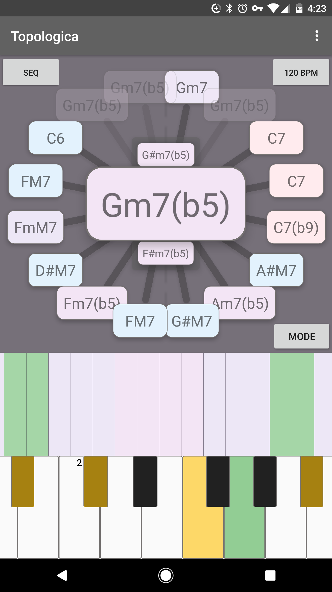
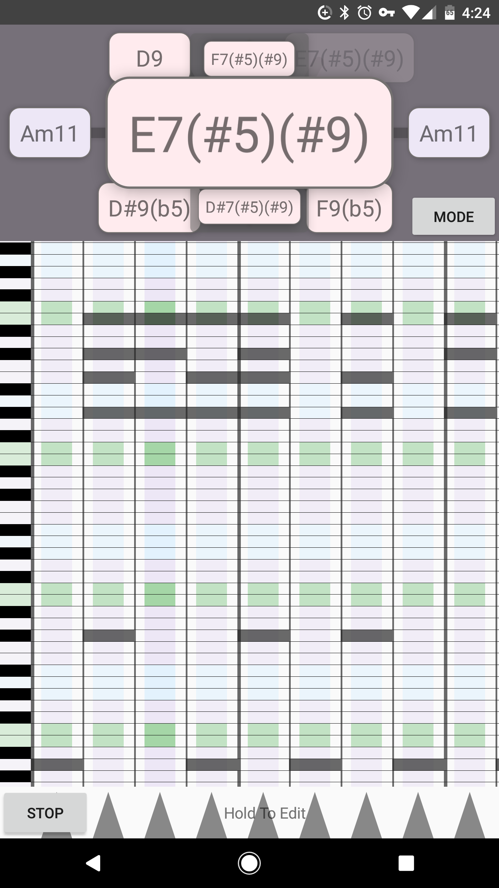
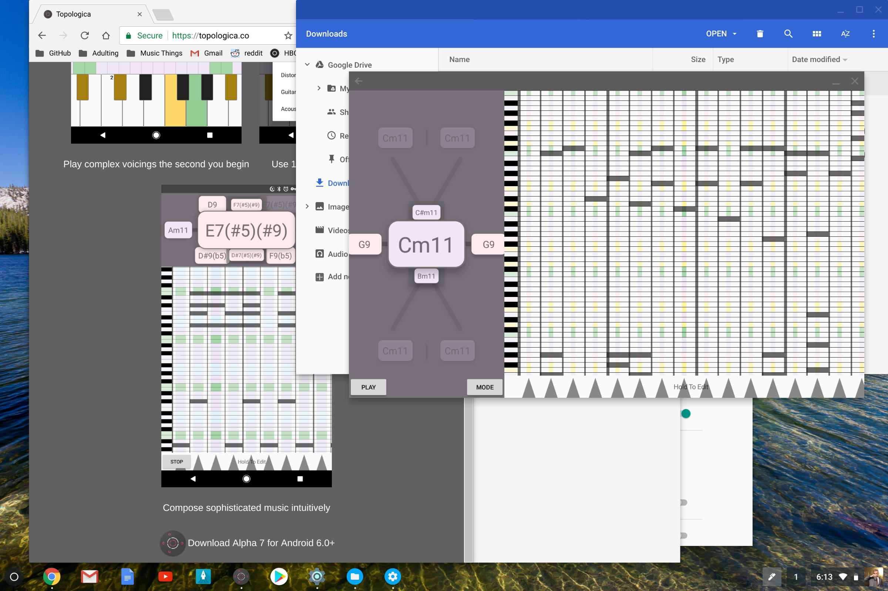
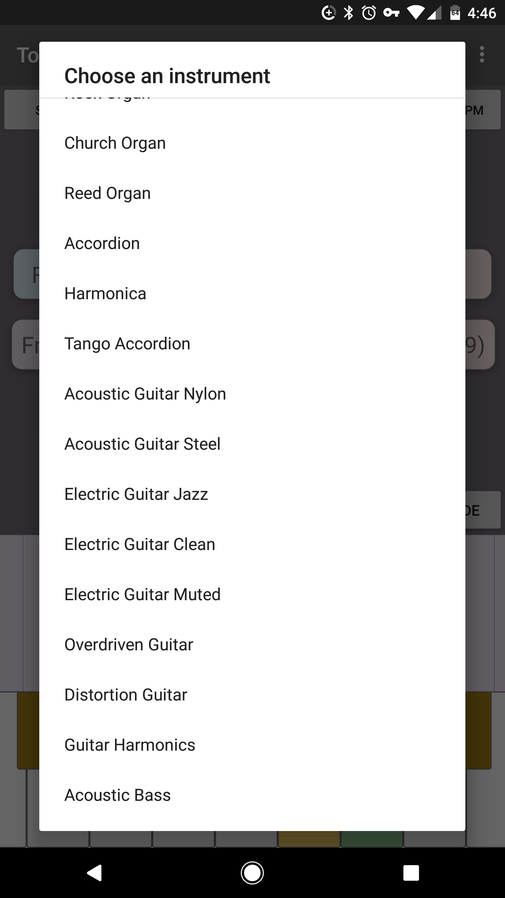

Topologica is not yet another keyboard app. Topologica turns
the phone in your pocket into an instrument that can be used to play
any song you could want to play, and to make it sound good.
Well actually, it's four instruments in one, and each of them can be
configured to sound like any one of 128 General MIDI instruments.
The goal here is to build both the keytar of the 2010s, and the tool
composers plug into their computers to work with the ideas they found
during their commutes.
For Non-Musicians
Open the app and touch everything you see and listen to your sounds.
Point your phone up and down — from the sky to the ground —
to make your sounds higher or lower.
Try playing the green note on the bottom Keyboard, and everything but green
on the top board (the Colorboard).
Scroll the Keyboard all the way to the left/bottom of its range by swiping
from its edges, and scroll the Colorboard to the middle of its range (i.e.,
tenor range or where people sing) by holding your phone parallel to the ground.
Congratulations: You've learned to play jazz voicings that take pianists
years to learn!
Play with the other modes and sounds in the app. In the crazy top navigation,
to the right in the middle is generally "forward." But don't be afraid to go
backward or diagonally!
Keep doing this until you sound good.
Watch the people of the gender of your choosing swoon at your suave sounds.
Look up some chords to songs you like and learn to play them in a way you like.
Note that this may not yet be possible for all songs as this app is still in alpha!
But hey, music is all about learning and exploring anyway.
You are now a musician.
For Musicians
Get that tune out of your head on your commute. Whip your phone out to show some
theory stuff in classes you teach or figure out new harmonies in your own work.
Have fun!
Screenshots & Video

Play complex voicings the second you begin

Compose sophisticated music intuitively3-Minute Demo: Funk in C#m

Chromebook support

Use 128 General MIDI instruments